BirthSkyDesigned and built · 10 min read
A star map of the night you were born, drawn in the browser and kept as a wallpaper.
BirthSky is a web page I designed and built on my own. You give it a name, a birth date, a time and a place. It works out the sky over that spot at that moment and lets you save it for a phone or a desktop.
- Role
- Design and build, solo
- Why
- A personal project. No client and no user research
- Timeline
- July 2026. The git history covers one day, from first release to version 1.0.4
- Platform
- Web, on phones and desktops. No sign-in
- Stack
- HTML, CSS and plain JavaScript with no libraries. OpenStreetMap place search. Hosted on Netlify
- Status
- Live, version 1.0.4. No usage numbers to share
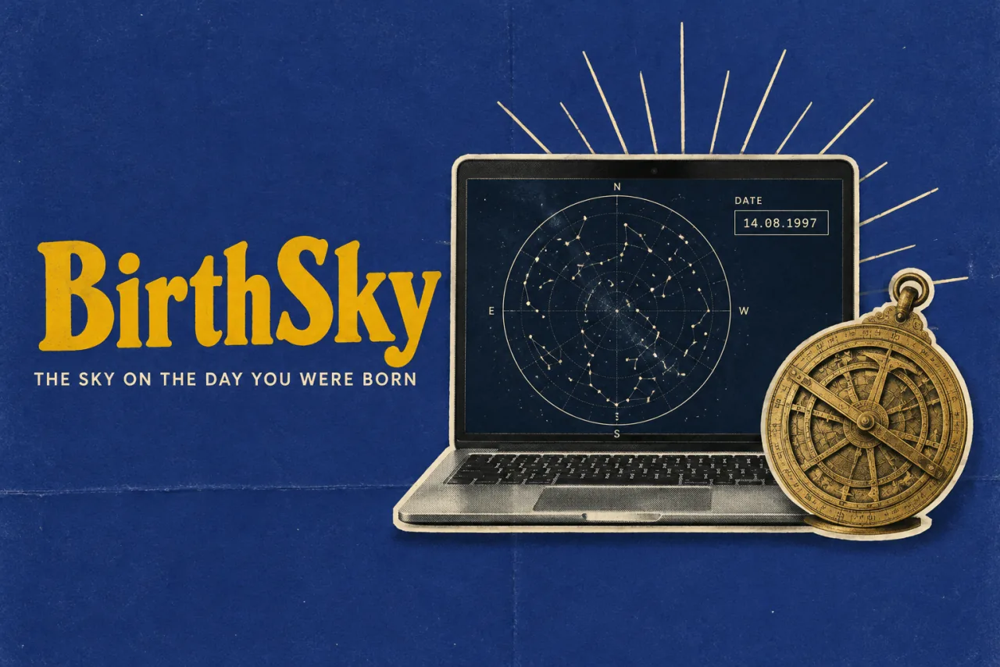
In short
- The problem: a star map can be a technical chart or a personal object. I wanted one page that gives you both from four answers.
- What I built: a static page with its own sky engine in plain JavaScript, three display modes, four switches and two wallpaper sizes.
- The key idea: one painter draws everything. A mode only turns layers on or off, and a download is the same painter run again at full size.
- Where it stands: live as version 1.0.4. The sky has not been checked against a reference, and the current version logs every visitor's answers to a Google Sheet without saying so. Both are next.
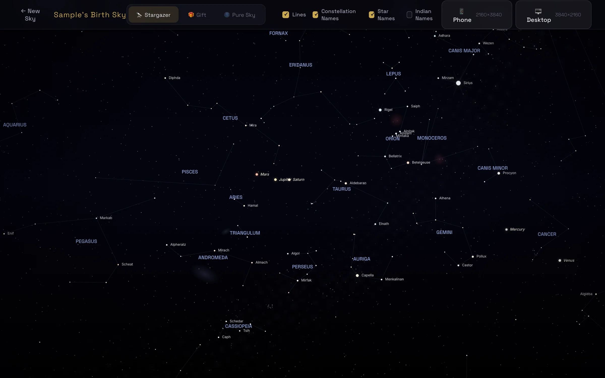
01 Why I built it
A date, a time and a place are enough to work out a sky
There was no client and no research. The brief was the line I put on the landing page: the night sky above you at the moment you were born, calculated, drawn and yours to keep.
That line sets two jobs. The sky has to be worked out from the answers, not decorated. And the result has to be something a person keeps, so the page ends in a download, not in a chart.
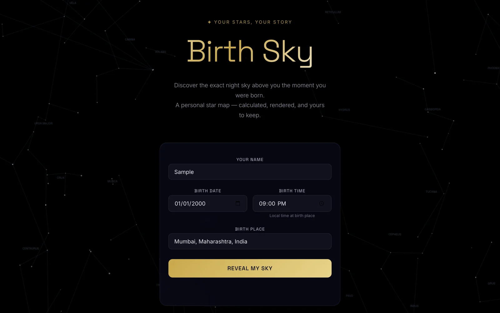
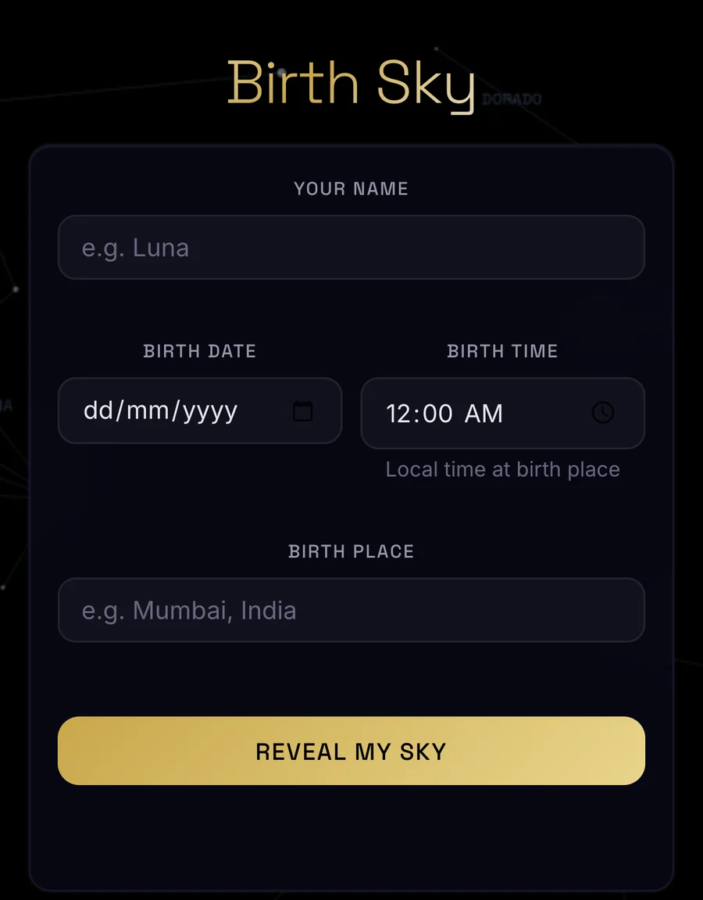
02 How it works
Eight steps from four answers to a saved picture
The page finds the place, turns the local time into world time, and then works out where every star and planet sat in the sky. Two terms come up. Sidereal time is "star time": it tells you which part of the sky is overhead at a spot on Earth. A stereographic projection is a way of laying the curved sky flat, the way a world map flattens the globe.
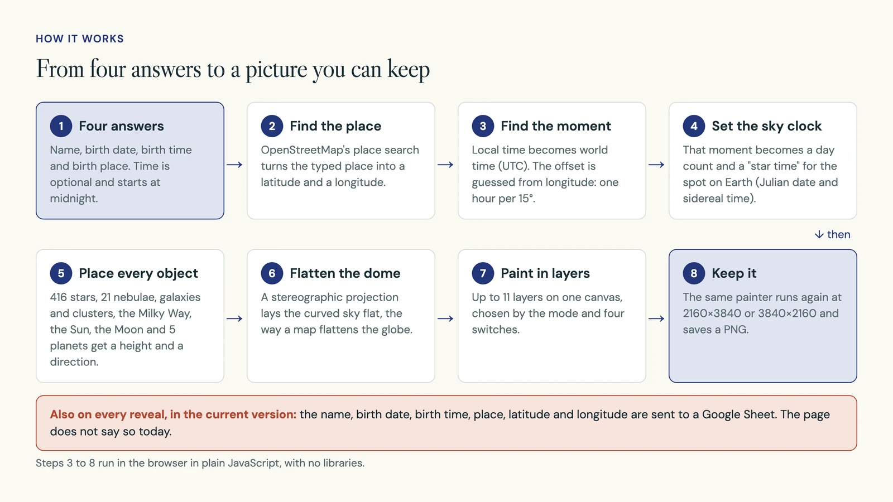
The result screen keeps every control in one bar and gives the rest of the window to the sky.
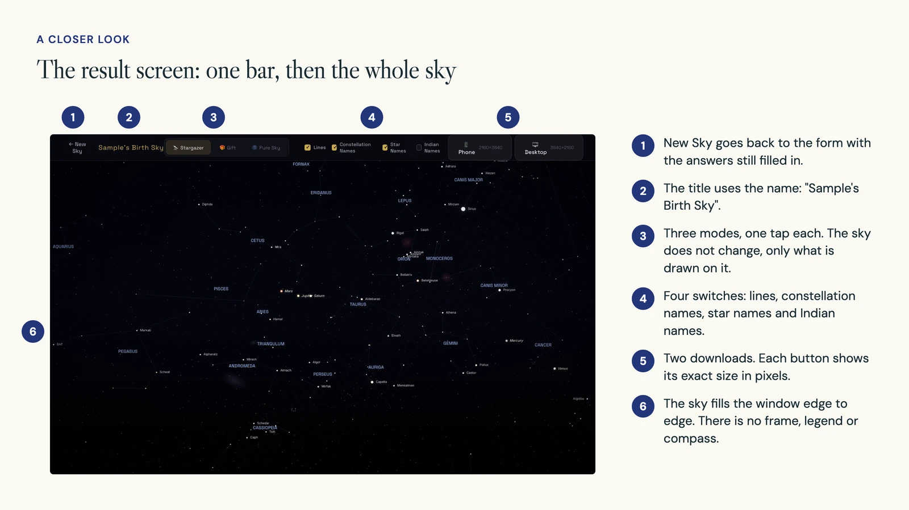
03 Decision 1
Four questions, and the time is allowed to be unknown
What you see: four fields. Birth time starts at midnight and carries a hint, "Local time at birth place". Place suggestions appear after three letters.
In the build: the typed place goes to OpenStreetMap's place search, which sends back a latitude and longitude. The local time then has to become world time, and that needs the time zone. I did not add a time-zone database. The page guesses the offset from longitude, at one hour for every 15 degrees.
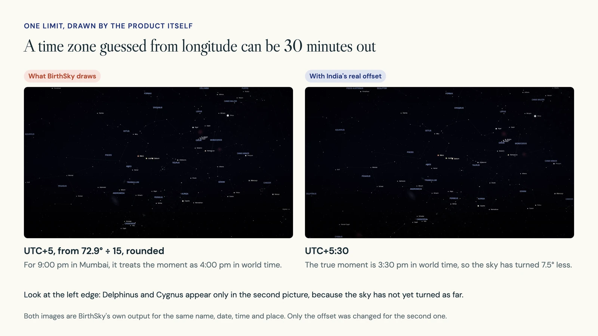
04 Decision 2
Three modes for three uses of the same sky
What you see: Stargazer is for reading the sky, with lines, names and planets. Gift adds the person's name, date, time and place to the picture. Pure Sky removes every word and line and leaves only light.
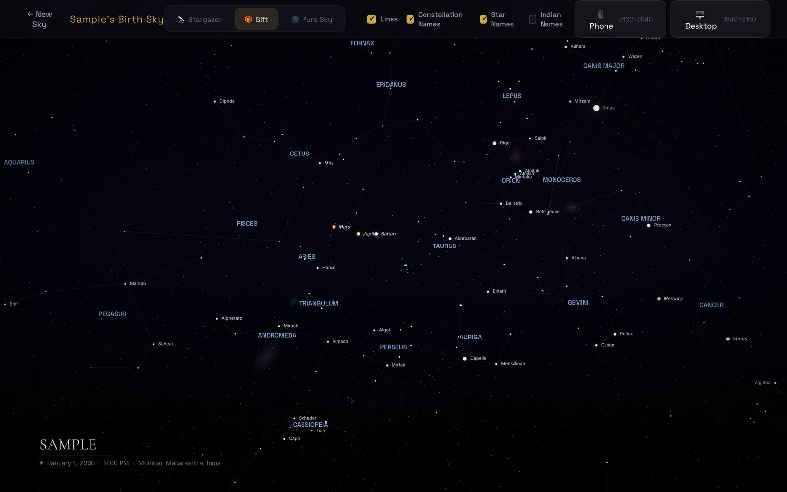
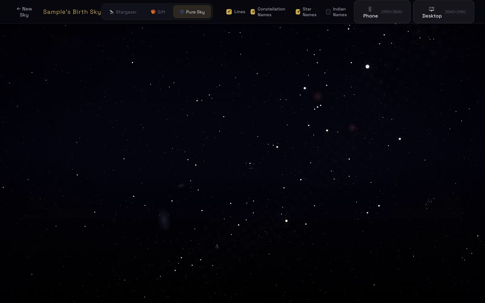
In the build: there is one painting function with up to 11 layers. A mode only decides which layers are drawn. The same function paints the screen and both downloads, so a mode never looks different in the saved file.
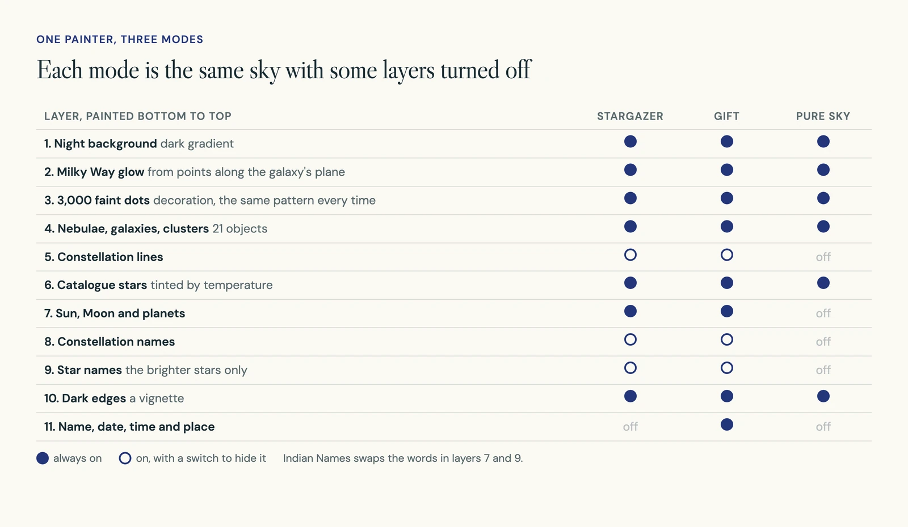
05 Decision 3
A wallpaper that fills the frame, not a round chart
What you see: the sky runs edge to edge in a rectangle. On a tall phone screen it is zoomed in.
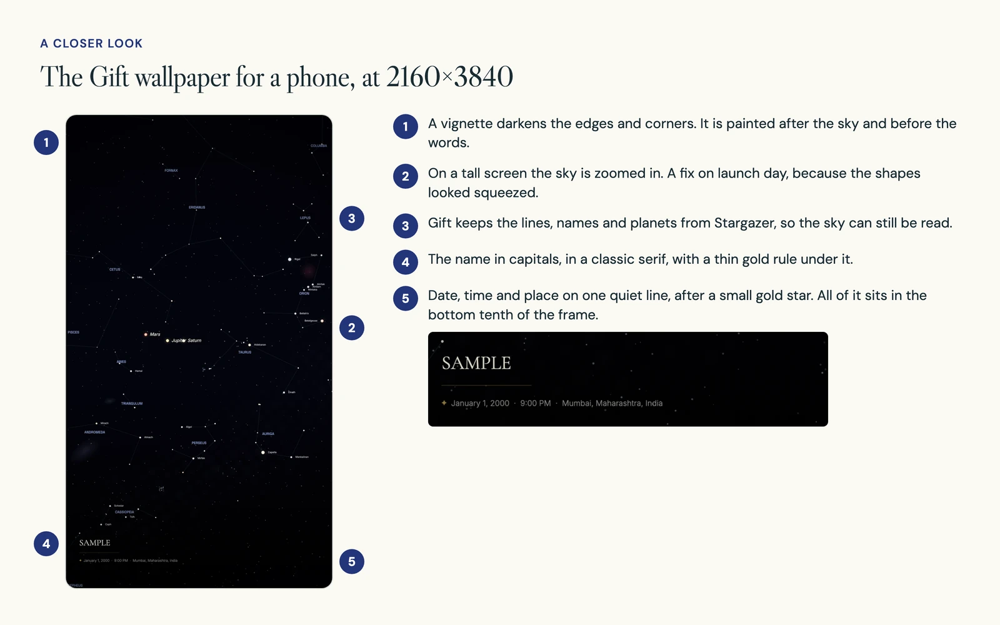
In the build: the download is not a screenshot. The painter runs again on a hidden canvas at 2160×3840 for a phone or 3840×2160 for a desktop, and the browser saves it as a PNG file. Star sizes, line widths and text are scaled to the size of the picture, so they hold at that resolution.
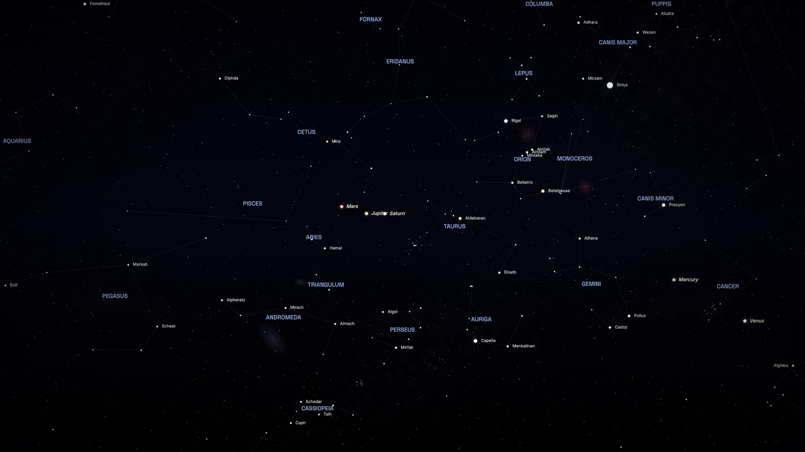
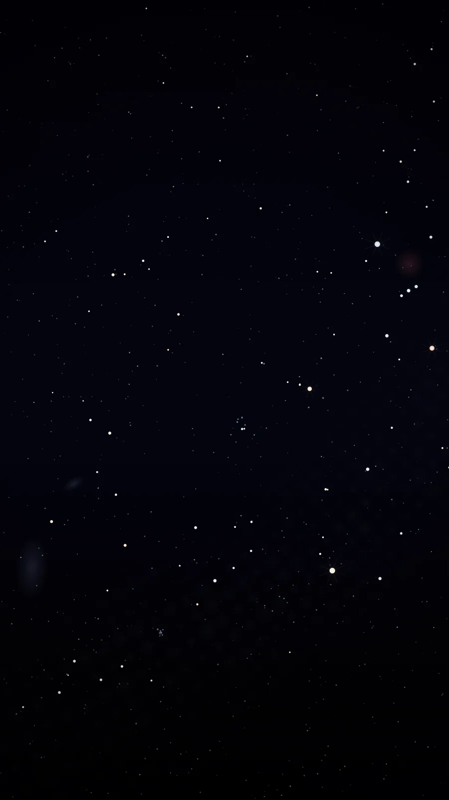
06 Decision 4
Indian names are one switch away
What you see: the Indian Names switch changes the labels, not the sky. Sirius becomes Lubdhaka, Betelgeuse becomes Ardra and Aldebaran becomes Rohini. The Sun, the Moon and the five planets change too, so Mars, Jupiter and Saturn read Mangala, Guru and Shani.
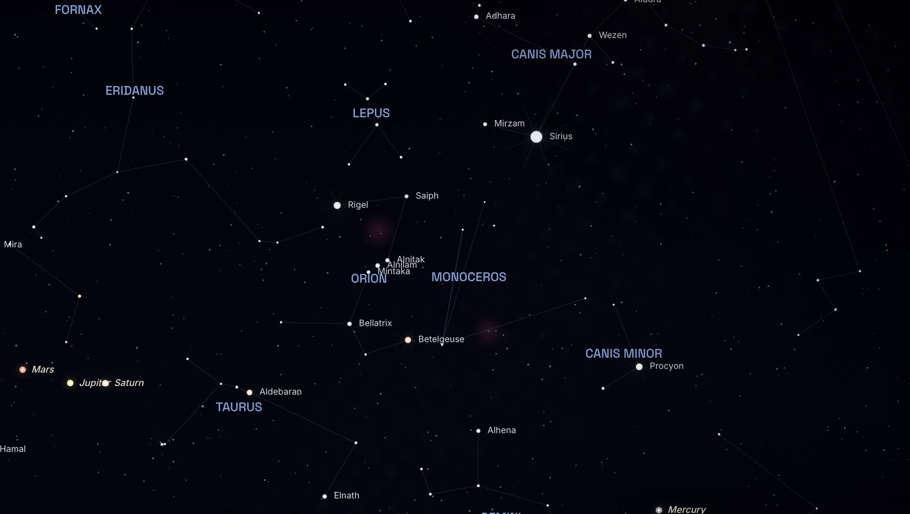
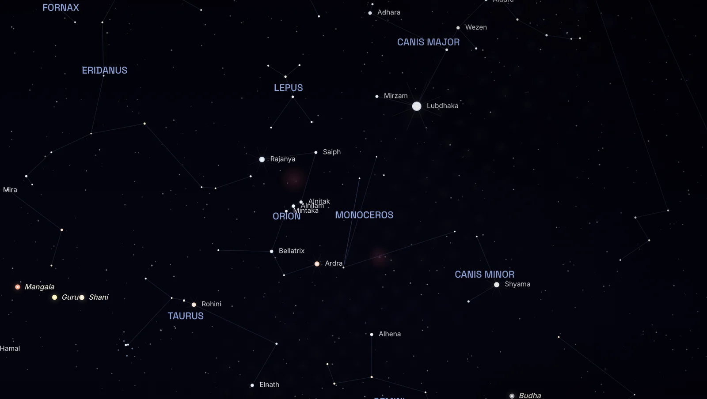
In the build: the swap is a lookup at the moment a label is drawn. Positions are never recalculated, so the switch is instant on screen and in the downloads.
07 Your answers
The current version logs every reveal to a Google Sheet, and does not say so
The sky is worked out and painted in the browser, and the download goes straight to the device. But each time someone presses Reveal My Sky, the current version also sends a row to a Google Sheet: the time, the name, the birth date and time, the place, and its latitude and longitude.
There is no notice on the page about this today, and no consent step. The place text also goes to OpenStreetMap's search while you type.
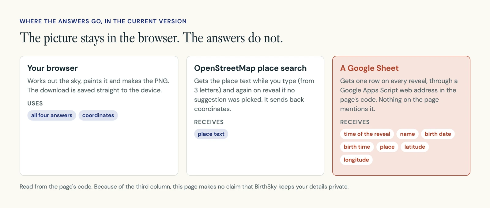
08 The build
Eight files, no libraries, and a morning of fixes on a phone
The whole product is a static page: one HTML file, one stylesheet and six scripts, 3,262 lines in all. The sky engine and the painter are written for this page, with no astronomy library. The star positions come from a catalogue of bright stars built into the page.
| Part | What I used |
|---|---|
| Page | HTML and CSS, with a dark theme and three web fonts |
| Sky engine | Plain JavaScript: day count, star time, height and direction of each object, projection |
| Painter | The browser's canvas, one function for screen and file |
| Data | 416 bright stars with position, brightness and colour; 21 nebulae, galaxies and clusters |
| Place search | OpenStreetMap |
| Hosting | Netlify, with security headers |
- 416
- stars in the catalogue, down to magnitude 5.5
- 69
- constellations with lines, 334 line segments
- 3,000
- faint decorative dots in every sky
- 15
- commits, all on 12 July 2026
The constellation lines are not typed in by hand. For each constellation, the page joins its catalogue stars with the shortest set of links that connects them all. That always produces clean lines, but not the traditional figures. Orion is a tree of short links, not the hunter.
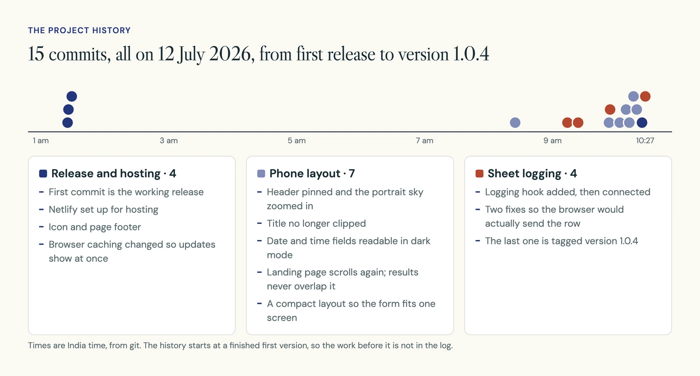
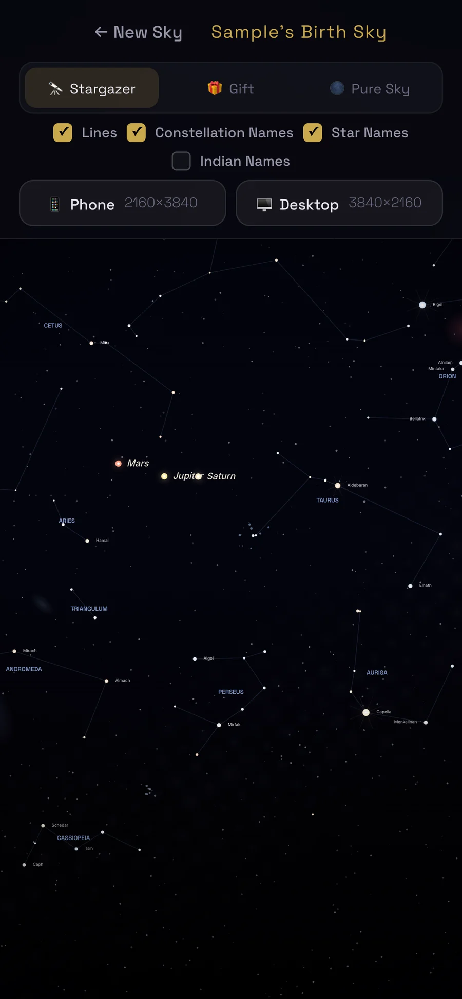
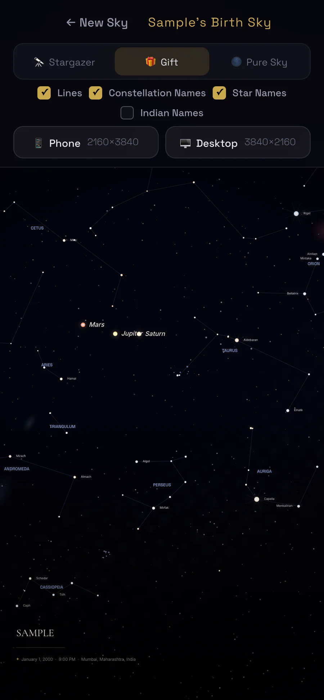
| Area | What went wrong, and what I changed |
|---|---|
| Phone layout | The header did not stay pinned, the title was clipped, date and time fields were hard to read in dark mode, and the hidden result layer could sit on top of the form. Seven commits fixed these, ending in a compact layout that fits the form on one screen. |
| Portrait sky | On a tall screen the sky looked squeezed. The painter now zooms in when the frame is taller than it is wide. |
| Updates not showing | Browsers kept old copies of the scripts. I removed long-term caching and added version numbers to the script links. |
| Checks | There are no automated tests and no build step. I have no test results to report. |
09 Where it stands
Live as version 1.0.4, with no usage numbers and no accuracy check
BirthSky is live as version 1.0.4. I have no usage numbers to share. The only record of use is the sheet, and it holds visitors' details, so I do not draw on it here.
These limits are in the current version:
- The positions of stars and planets have not been checked against a reference sky for any date. The planets come from a simplified orbit model.
- The time zone is guessed from longitude, with no daylight saving.
- The sky is always drawn as night. For a daytime birth, the Sun shows as a glowing dot among the stars.
- The 3,000 faint dots are decoration, in the same pattern for every sky. The Milky Way glow varies a little each time it is drawn, so a download is not an exact copy of the screen.
- The sky is a single image with no text description for screen readers.
10 What is next
Fix the logging first, then the inputs
- Add a clear notice beside the Reveal My Sky button that says what is logged and why, or remove the logging. This comes before anything else.
- Look up the real time zone for the place and date, including daylight saving.
- Check star and planet positions against a reference sky for a set of known dates and places, and correct what is off.
- Mark a sky that was drawn from an unknown birth time.
- Give the sky a short text description for screen readers.
11 What I learned
A sharp picture can hide a rough input
The picture looks exact whatever goes in. A guessed time zone, a default midnight and stars below the horizon all come out just as crisp as a correct sky. The work that matters next is in the inputs, not in the painting.
One painter for the screen and the file was worth it. Every mode and switch worked in the downloads from the first release, because there was no second drawing to keep in step. And a feature added on launch day, like the logging, needs the same care about what it tells people as everything else.
How much bigger? Show the difference.